3 The Infamous ‘n > 30 rule’
The title of this chapter may be a bit confusing. The formal title should be “The Central Limit Theorem”. But I wanted to make a point in this chapter about the misuses of this remarkable theorem. Let’s dive in.
3.1 Central Limit Theorem
Before we formally introduce this theorem, let us first look at a motivating example. Recall the service time example we saw in Chapter 2. In that, we saw that the sampling distribution of \(\bar x\) tend to follow a normal model as \(n\) increases while the sampling distribution of the sample maximum does not show any normal behavior. To put things in perspective, let us look at some plots.
Sampling Distributions of the Sample Mean
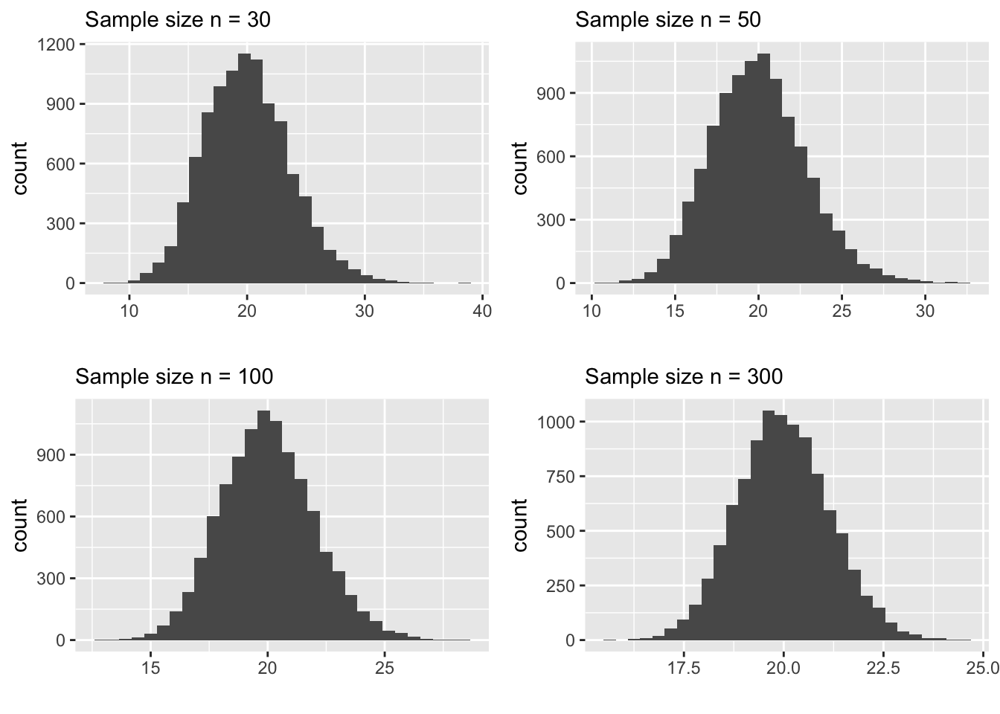
Carefully examine the plots above. In particular, pay attention to the following:
- shape
- spread (look at the scale of the x-axis)
The behavior of the sample mean as \(n\) increases has two noteworthy aspects.
For larger samples, like \(n > 100\), the sampling distribution of \(\bar x\) is normal with the “center” being very close to the true mean of the population that we sample from.
The spread get’s smaller as \(n\) increases.
Why is this important to us?
First, the normal distribution is something that is easy to understand and we know how to calculate probabilities using the normal model. Also, recall the “68-95-99.7% rule” which describes how the probabilities change with respect to the standard deviation (spread) of the model. So, anything that follows a normal model is good news for the statistician, because we know a LOT about this model.
Second, the spread (standard deviation) decreases as \(n\) increases. This is encouraging because it ensures that for larger samples we are not too far off from the “center” of the distribution which happens to be very close to the true mean.
In fact, These facts were discovered a long time ago and they are summarized in one of the celebrated theorems in statistics. It is called the Central Limit Theorem. It says, under some conditions, the sample mean \(\bar x\) follows a normal model with center being at the true population mean and the spread decreases at a rate of \(1/\sqrt n\). We can denote this more succinctly as follows:
\[ \bar x \sim N(\mu , \frac{\sigma}{\sqrt n})\]
We will explore this theorem further in this chapter. But, let us first look at an example ( a statistic) that do not agree with the Central Limit Theorem. This example helps us to understand the core idea of this theorem.
The plots below are sampling distributions of the sample maximum constructed from the same service time population (Example 2.1). Carefully look at the shape and spread of these plots.
Sampling Distributions of the Sample Maximum
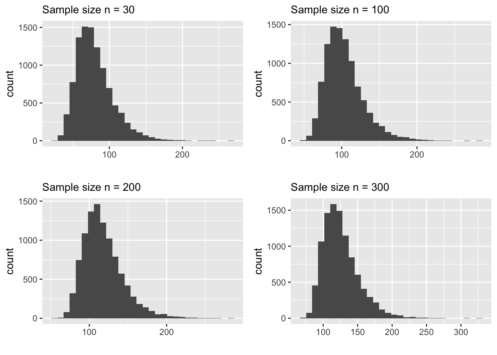
You’ll notice immediately that the shape does not look normal even for \(n=300\). Also, the spread does not decrease that much. In fact, the spread is fairly constant across all 4 distributions. This is NOT an accident. The reason that this statistic, the sample maximum, does not obey the Central Limit Theorem is because it is NOT an average constructed from the sample. This is the core idea of this theorem. The normal behavior of the sampling distribution is ONLY applicable to sample averages. Here is another example to demonstrate this.
Suppose we want to know the percentage of binge drinkers in college campuses. A good point estimate for this parameter is the sample proportion \(\hat p\). What is the sampling distribution of this statistic \(\hat p\)? Let’s create a small simulation to find this out. Here are the steps:
Create a population of binge and non-binge drinkers
Draw a sample from this population, say of size \(n=30\) and calculate \(\hat p\).
Repeat the above step (sampling and calculation of \(\hat p\)) for a large number of times and plot the distribution of those \(\hat p\) values.
population_size <- 1E6
sample_size <- 20
my_drinking_pop <- rbinom(population_size, 1, prob = 0.20)
simulated_samples <- 1E3
phat <- 0 #storage bucket
for(i in 1:simulated_samples)
{
mysample <- sample(my_drinking_pop, size = sample_size)
phat[i] <- sum(mysample)/sample_size
}
ggplot() +
geom_histogram(mapping = aes(x = phat),
bins = 13) +
labs( title = 'Sampling Distribution of phat',
subtitle = 'Sample size n = 20',
x = 'phat')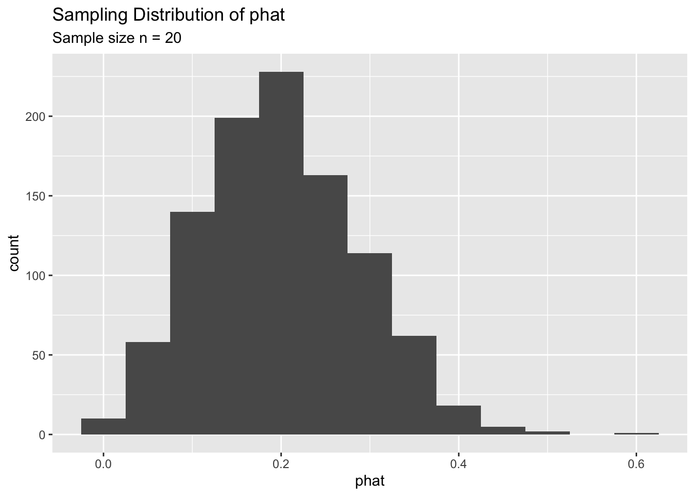
As you can see, for \(n=20\) the sampling distribution of \(\hat p\) is somewhat skewed. We can increase the sample size and see what happens to the sampling distribution.
The following plots shows relationship of \(n\) with the shape and spread of the sampling distribution.
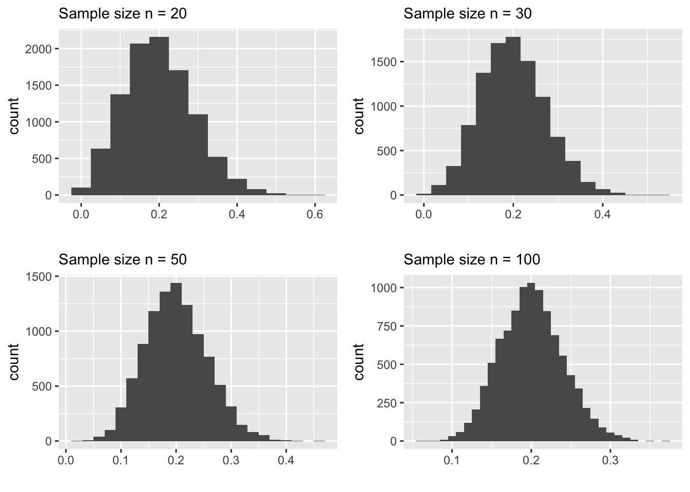
It seems like the Central Limit Theorem is at play. That is, the sampling distribution of \(\hat p\) looks normal for large \(n\). But, we know that the theorem only applies to AVERAGES. Now you might wonder is \(\hat p\) an average?
The answer is ‘Yes’. It is a proper average. It does not look like one, but we can show why it is an average. Let’s denote a random sample of binge grinkers as \(x_1, x_2, \ldots, x_n\). Each \(x_i\) is either a \(1\) or \(0\), depending on whether the person is a binge drinker or not. Now if we write out the formula for the sample proportion \(\hat p\) you’ll see why it is an average.
\[ \begin{array}{ll} \hat p &= \frac{Number \ of \ binge \ drinkers \ in\ the\ sample}{Total\ number\ of\ people\ in\ the\ sample} \\ &= \frac{\sum_{i=1}^nx_i}{n} \end{array} \]
As shown, above, \(\hat p\) is an average and that’s why the sampling distribution of \(\hat p\) behaves according to the Central Limit Theorem (CLT). It is now time to take stock of the important facts that we observed so far. Consider the following summary table:
| Statistic | Obeys CLT | Shape at n = 30 | Shape at n = 50 |
|---|---|---|---|
| Sample Mean (\(\bar x\)) | Yes | Skewed | Skewed |
| Sample Max | No | not relevant | not relevant |
| Sample proportion (\(\hat p\)) | Yes | Skewed | Skewed |
Now you probably see why I labeled this chapter as “The infamous n > 30 rule”. Most people believe that we can make use of the CLT if the sample size is “larger than 30”. But, as you saw in the above examples, this “rule” is extremely questionable. You might object to this observation by saying: “Well, you used simulated data. You could have cherry-picked your data to”prove" a point". Certainly, this is a valid (and reasonable) objection. Let us therefore look into some real datasets.
3.2 Explorations with Real Data
In this section, we will look at 3 examples with real data. Keep in mind, these examples are hard to find. Because, it is very unlikely that we have ALL the members (data) available from a population. If we have have all data points from a population, there is no need for statistical inference. These examples are chosen to highlight one of the main misconceptions of CLT, namely, the ‘\(n>30\) rule’ (the title of this chapter!). In each example, when you look at the sampling distributions of the mean, pay close attention to the sample size. Ask yourself, at what sample size does the sampling distributions start to look more like a normal model.
NBA Player Salaries
The following plots show the population distribution of NBA player salaries in 2016.
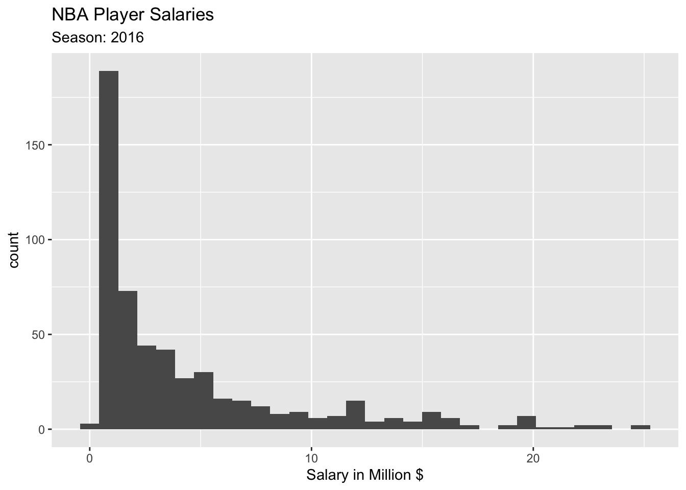
The following plots show the sampling distributions are made from samples from this population.
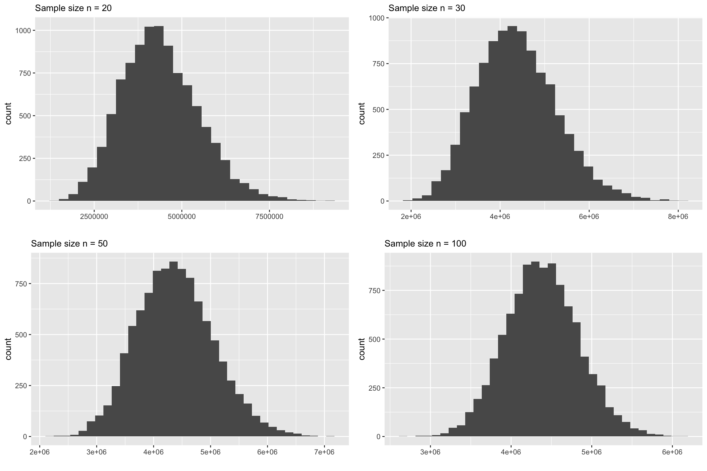
Observations
The first thing you will notice that at \(n=30\), the skewness is quite visible. At \(n=50\), it is still slightly skewed. So may be we ought to modify the “rule” as \(n>50\)?
Undergraduates in US Colleges and Universities
The second example is from ALL US colleges and universities. Note that there are about 5000 colleges and universities in the US. However, there are many missing datapoints since it is hard to find all data from all institutions. As a result the population size is 1269. In this example, we are interested in the undergraduate population in US colleges and universities. Here is the population distribution.
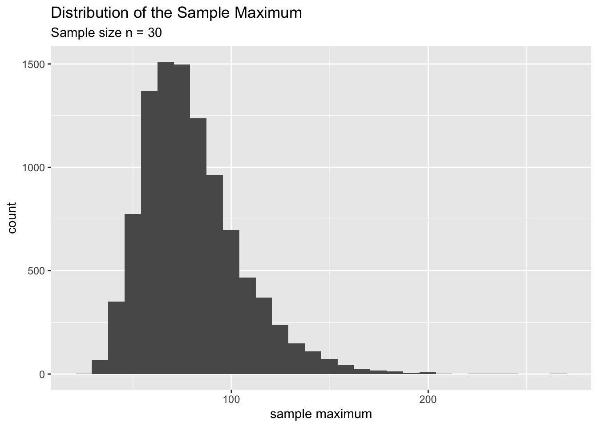
The following plots show the sampling distributions are made from random samples from the above population.
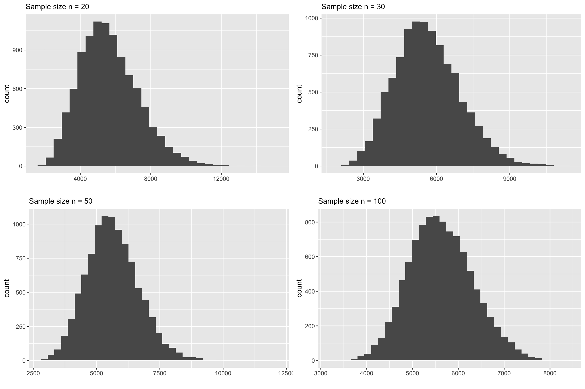
Even this example, at \(n=30\) the skewness is quite visible. At \(n=50\) the skewness is still there. Even at \(n=100\), if you look at carefully you’ll see that there is a slight skewness. So may be the rule should be \(n>100\)?
Departure Delays in LaGuardia Airport
Now, let’s look at the final example. This data is about flight delays. You can find a lot of information and download data for past years from this website: https://www.transtats.bts.gov/ONTIME/Departures.aspx
The dataset we are looking at consists of ALL flights that departed from LaGuardia airport in 2017 from the three main carriers (American Airlines, Delta, and United). That is, all departures from Jan 1 2017 to Dec 31 2017. The variable of interest is departure delay time. First, let’s take a look at the population distribution of departure delays.
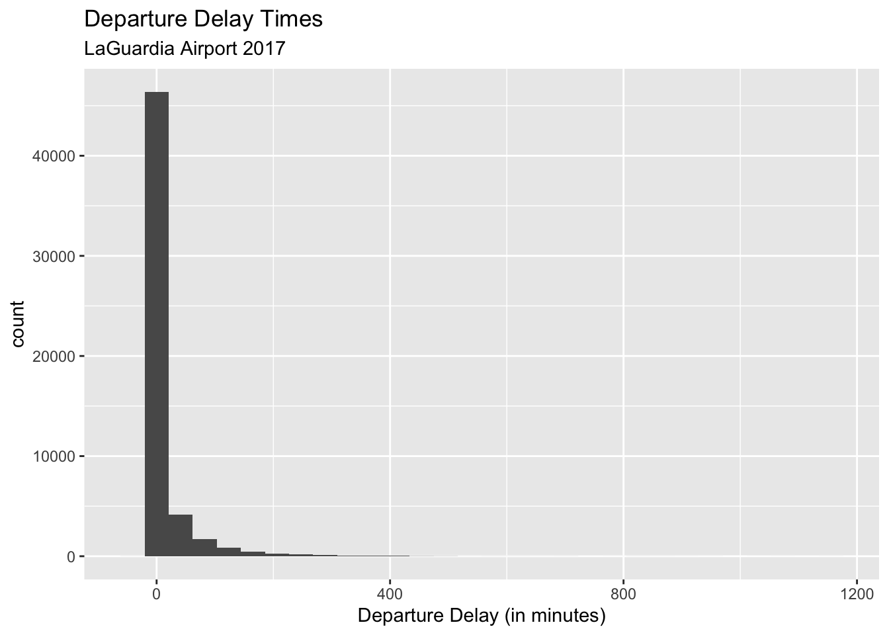
Now let’s look at the corresponding sampling distribution for the sample mean.
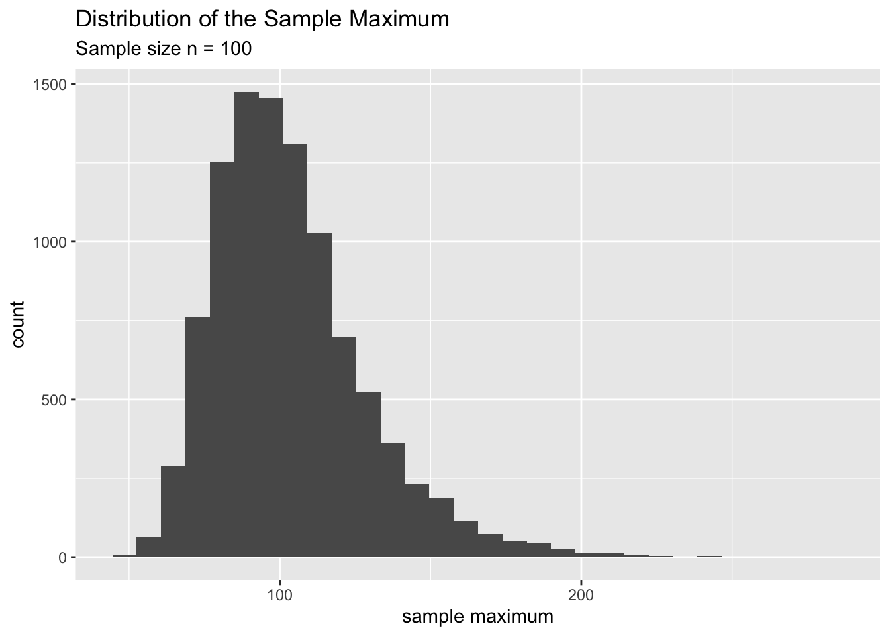
You can clearly see that none of the above plots look normally distributed. Let us increase the sample size even further and see at what point it starts to look normal.
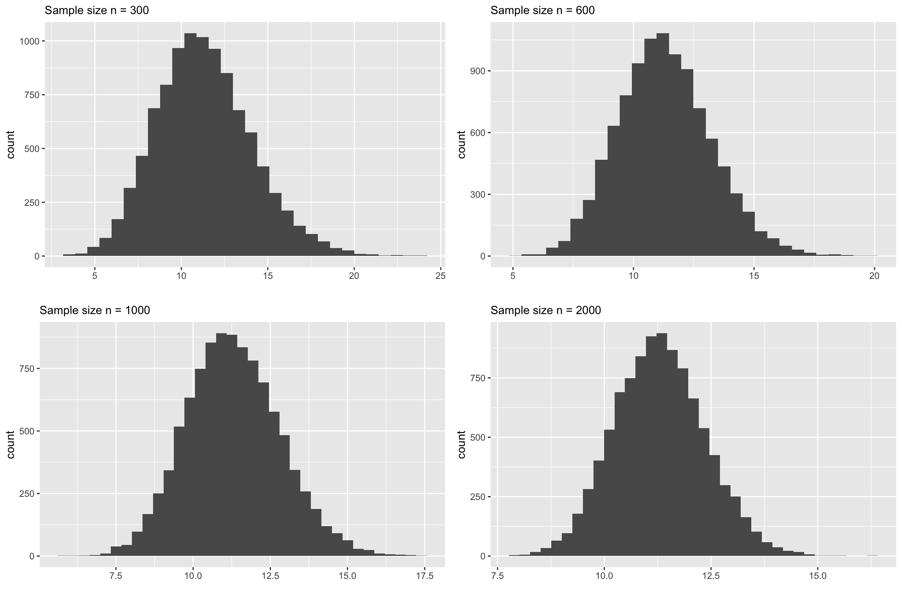
The above plots underscore the main point of this chapter. The common belief that if \(n>30\) the CLT is applicable for sample means. This is a very misguided notion. The above plots demonstrate that for this dataset the sample size \(n\) should be around 1000(!) to see a symmetric, bell shaped sampling distribution.
By now, hopefully, you are convinced that there is a problem in the common understanding of the Central Limit Theorem. The main point in this chapter is to be aware of this issue and be very cautious in using the CLT.
Run the following command in RStudio to open the data and do this exploration yourself. It will open an app that allows you to change the sample size and construct sampling distributions on your own.
3.3 Some Questions to Ponder
1. Why do people advocate for the "n > 30 rule" if it is problematic?Answer:
Hard to say. My guess is that this is similar to our beliefs and practices of recycling plastics. That is, we were told to toss our plastics into the recycling bin and we normally believe that those plastics will get recycled somehow. But the reality is MUCH more complicated than that. Here is a wonderful documentary about recycling pastics and its realities: https://www.youtube.com/watch?v=-dk3NOEgX7o
Similarly, the Central Limit Theorem should be used with caution. There are many factors that we need to look into before we jump in and use this theorem. The issue mainly lies in understanding the population and its distribution. Since we don’t have access to the population (if we did we’ll be all be at the beach!), we have to rely on a random sample to make a judgement about the variability, skewness and outlier in the population. This is a very challenging task. For example, recall the flight delay example. If we haven’t had the entire dataset with us, would we have guessed that the population may look extremely skewed? Would we have guessed that there might be flights that are delayed 20 hours! Consider an example about cancer medication and their survival time. Unless we have an in depth knowledge about the cancer and the drug, it would be very difficult to even have a vague idea about the population distribution. In this case we need to rely on domain experts to tell us more about variance, skewness and extreme values.
In reality we only have a single sample from a given population and we need to make a judgement call on whether CLT is an appropriate technique to use with this sample. That’s why it is better to have a healthy level of skepticism about our data before we proceed. As good statisticians, it is our duty to inform our clients about the limitations of the data and the inferences that we draw from them.
2. What are some of the signs that CLT may be questionble?Answer:
If you look back the simulated data examples and real data examples you’ll see that, for skewed data, it takes much larger sample size (in some cases in the 100’s) to use the CLT. Also, in the final example with departure delays, the population was not only highly skewed but also contained extremely large values in the tail. This is definitely a red flag. So if you believe that the population is skewed and/or with extreme values you need to be super careful with the CLT.
3. How can we know whether the population is skewed or not when we don't have access
to the entire population?Answer: This one is tricky. Yes, we never have access to the entire population. All we have is a single random sample. If our sampling process had done a good job in capturing the variance in the population then it will provide important clues about the skewness and presence of extreme values in the population. For example, here are two random sample of sizes \(n=30\) and \(n=100\) respectively from the flight delay example.
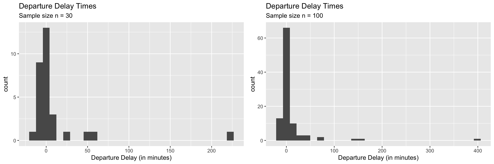
As you can see from the above two plots, the bigger sample was able able to capture more of the variance in the population but still failed to include some of the really large delay times even with \(n=100\). But, this is where the statisticians need to step in. We can raise a red flag against anyone who is tempted to use the CLT with a sample like this for hypothesis testing or confidence intervals. We can educate them to see the danger of using CLT with a sample like this.
4. If we see extreme values (like in the above two samples) should we remove them
and proceed to use the CLT?Answer: The safe answer is ‘no’. Removing data points has to be done with extreme care. There are some instances where removing extreme values may be legitimate.
If the data values are recorded incorrectly (errors in the data). For example, someone might have keyed in 10,000 (incorrect) instead of 1000 (correct). If we know for sure that this is the case, first we should try to find the correct value, if not remove it.
If the purpose of the analysis dictates the removal of extreme values. Can you think of a situation where it might be essential to remove extreme values? This will be a part of your HW for this chapter.